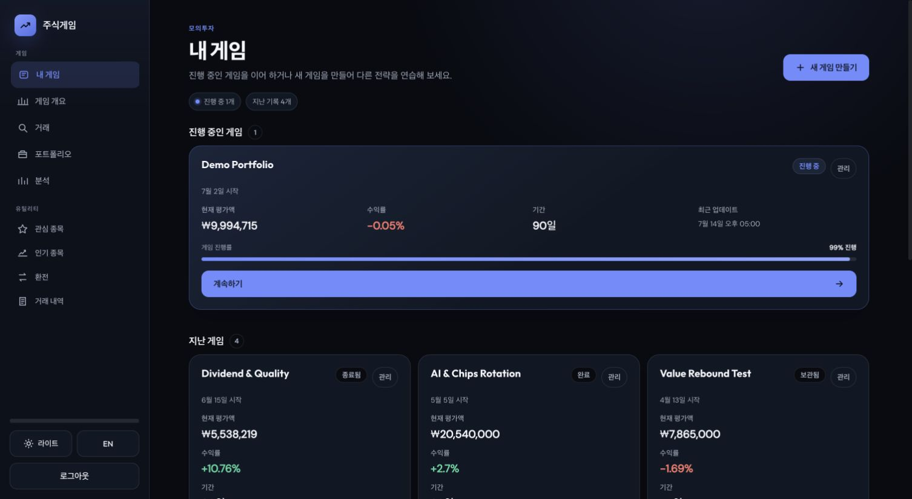

웹 · 개인 프로젝트운영 중
Stock Game
가상 자금으로 한국과 미국 주식에 투자하는 게임입니다. 시작 금액과 투자 기간을 직접 정하고, 주식을 사고팔며 자산을 얼마나 늘릴 수 있는지 도전해 봅니다. 투자 결과는 코스피와 S&P 500 같은 시장 지수와 함께 비교할 수 있도록 만들었습니다.
- FastAPI
- PostgreSQL
- SQLAlchemy
- React
- 392 백엔드 테스트 · 2026.11.12
- 17개 실제 PostgreSQL 동시성 테스트 케이스
- 21개 브라우저 흐름 테스트
주문JWT 인증
행 잠금FOR UPDATE
체결동시성 테스트
자산 기록매시간
- 주문
로그인한 사용자의 주문만 받습니다. 로그인 요청은 일정 시간 안의 횟수를 제한합니다.
- 행 잠금
게임 세션 행을 잠근 뒤 잔고를 확인하고 차감합니다. 두 주문이 동시에 와도 같은 잔고를 두 번 쓰지 못합니다.
- 체결
같은 잔고로 두 번 사는 경우와 보유량보다 많이 파는 경우를 실제 PostgreSQL에 동시 요청을 보내 확인합니다.
- 자산 기록
거래 확정과 그 뒤의 자산 기록 저장을 나눴습니다. 기록 작업은 여러 워커 중 하나만 실행합니다.
거래 후 기록이 실패하면 주문을 다시 실행할까?
아니요. 거래가 확정된 뒤 자산 기록 저장이 실패해도 서버는 주문을 다시 실행하지 않고, 실패를 로그로 남긴 채 저장된 거래를 그대로 성공으로 응답합니다. 응답을 받지 못해 다시 보내는 경우에 대비해 주문에 중복 방지 키를 붙일 수 있게 했습니다. 같은 키로 다시 오면 새로 체결하지 않고 저장된 결과를 돌려주며, 키가 없는 요청은 새 주문으로 처리됩니다.

실제 자금 거래가 아닌 모의투자입니다. 부하 테스트는 하지 않았습니다.